Each skill is a ladder: a fully worked example in the solid-framed box, then four YOUR TURN questions in the dashed box — same skill, new numbers, no help. Work all four before checking the gray check: line; a tracker tick needs all four right first time.
Nothing in this chapter is skipped. Every section, §12.1 through §12.7, is assessed — they map onto CED topics 5.1 to 5.11, which is the whole of Unit 5. This is the first chapter in the series you have to learn end to end. The one idea the whole chapter turns on. Thermodynamics tells you whether a reaction can happen. Kinetics tells you how fast, and the two are independent. Diamond turning into graphite is thermodynamically downhill and yet takes longer than the age of the Earth — because the rate, not the favourability, is what you observe. The habit that prevents most lost marks. Orders come from experiment, never from the balanced equation. Write that on the inside of your eyelids. The single commonest error in Unit 5 is reading a rate law off the coefficients of an overall equation.Ladder 1 • Reaction rate and stoichiometry
ZUM §12.1Rate is a change in concentration per unit time. Because the species in a reaction are consumed and produced at different speeds, we divide by the coefficient so that one number describes the reaction.
For \(a\ce{A} + b\ce{B} \longrightarrow c\ce{C} + d\ce{D}\): \[ \text{rate} = -\frac{1}{a}\frac{\Delta[\ce{A}]}{\Delta t} = -\frac{1}{b}\frac{\Delta[\ce{B}]}{\Delta t} = +\frac{1}{c}\frac{\Delta[\ce{C}]}{\Delta t} = +\frac{1}{d}\frac{\Delta[\ce{D}]}{\Delta t} \]
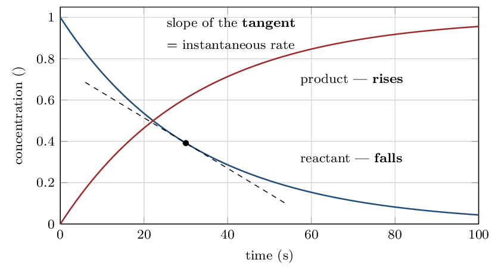
- What is the reaction rate?
- How fast does \(\ce{NO}\) disappear?
- How fast does \(\ce{NO2}\) appear?
- Why is there a minus sign in front of \(\Delta[\ce{A}]/\Delta t\)
for a reactant? to make the rate come out positive
(a) 0.020 M/s (b) 0.040 M/s (c) 0.040 M/s (d) to make the rate come out positive
Ladder 2 • Rate laws and reaction order
ZUM §12.2–12.3A rate law says how the rate depends on concentration: \[ \text{rate} = k[\ce{A}]^{m}[\ce{B}]^{n} \] \(m\) and \(n\) are the orders; \(m + n\) is the overall order; \(k\) is the rate constant.
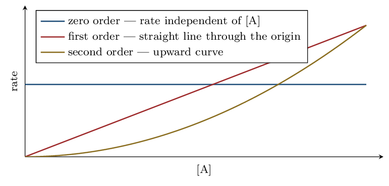
- What is the overall order?
- By what factor does the rate change if \([\ce{Y}]\) is doubled?
\(4\times\)
- By what factor does the rate change if \([\ce{X}]\) is halved?
halves
- A different reaction is \(\ce{2A + B -> C}\) with measured rate
\(= k[\ce{A}][\ce{B}]\). Is the order in \(\ce{A}\) equal to 2?
Explain. no — orders come from experiment
(a) 3 (b) \(4\times\) (c) halves (d) no — orders come from experiment
Ladder 3 • The method of initial rates
ZUM §12.2–12.3The standard experimental route to a rate law. Change one concentration at a time and watch what the rate does.
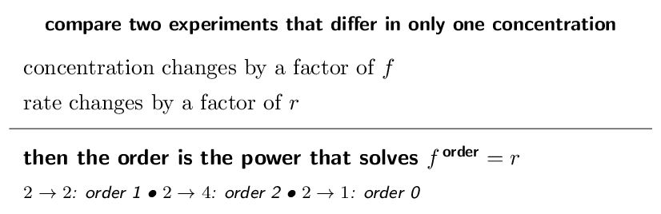
| Exp | \([\ce{A}]_{0}\) (M) | \([\ce{B}]_{0}\) (M) | initial rate (M/s) |
|---|---|---|---|
| 1 | 0.10 | 0.10 | 2.0e-3 |
| 2 | 0.20 | 0.10 | 8.0e-3 |
| 3 | 0.10 | 0.20 | 4.0e-3 |
| Exp | \([\ce{X}]_{0}\) (M) | \([\ce{Y}]_{0}\) (M) | initial rate (M/s) |
|---|---|---|---|
| 1 | 0.10 | 0.10 | 1.5e-3 |
| 2 | 0.20 | 0.10 | 3.0e-3 |
| 3 | 0.10 | 0.20 | 1.5e-3 |
- Find the order in \(\ce{X}\).
- Find the order in \(\ce{Y}\).
- Write the rate law and give the overall order.
rate \(= k[\ce{X}]\), first order
- Calculate \(k\), with units.
(a) 1 (b) 0 (c) rate \(= k[\ce{X}]\), first order (d) 1.5e-2 /s
Ladder 4 • The units of \(k\)
ZUM §12.2The units of \(k\) are not fixed — they are whatever makes the rate law come out in M/s. That makes them a free check on your order.
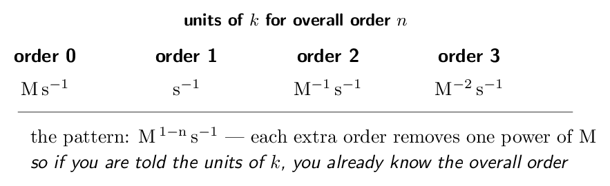
Rate always has units M/s, i.e.\ \(\mathrm{M\,s^{-1}}\). For a second-order reaction, rate \(= k[\ce{A}]^{2}\), so \[ k = \frac{\text{rate}}{[\ce{A}]^{2}} = \frac{\mathrm{M\,s^{-1}}}{\mathrm{M^{2}}} = \mathrm{M^{-1}\,s^{-1}} \]
The same move for any order. Divide \(\mathrm{M\,s^{-1}}\) by \(\mathrm{M}^{n}\), giving \(\mathrm{M^{\,1-n}\,s^{-1}}\). For \(n=0\) that is \(\mathrm{M\,s^{-1}}\); for \(n=1\), \(\mathrm{s^{-1}}\); for \(n=3\), \(\mathrm{M^{-2}\,s^{-1}}\). Now use it backwards, which is where the marks are. If a question hands you \(k = 0.045\;\mathrm{M^{-1}\,s^{-1}}\), you already know the reaction is second order overall before reading anything else. Examiners use this to test whether you understand the relationship or merely memorised a table. And use it as a check. If you determine orders from a data table and then compute a \(k\) whose units disagree with your overall order, one of the two is wrong — go back before continuing.- Give the units of \(k\) for a first-order reaction.
\(\mathrm{s^{-1}}\)
- \(k = 0.020\;\mathrm{M^{-1}\,s^{-1}}\). What is the overall
order?
- \(k = 3.5\;\mathrm{M\,s^{-1}}\). What is the overall order?
- Derive the units of \(k\) for a reaction that is first order in
\(\ce{A}\) and second order in \(\ce{B}\). \(\mathrm{M^{-2}\,s^{-1}}\)
(a) \(\mathrm{s^{-1}}\) (b) 2 (c) 0 (d) \(\mathrm{M^{-2}\,s^{-1}}\)
Ladder 5 • Integrated rate laws
ZUM §12.4A rate law relates rate to concentration. An integrated rate law relates concentration to time — which is what you actually need to answer “how much is left after ten minutes?”
| Order | Integrated law | Linear plot | Slope |
|---|---|---|---|
| 0 | \([\ce{A}] = -kt + [\ce{A}]_{0}\) | \([\ce{A}]\) vs \(t\) | \(-k\) |
| 1 | \(\ln[\ce{A}] = -kt + \ln[\ce{A}]_{0}\) | \(\ln[\ce{A}]\) vs \(t\) | \(-k\) |
| 2 | \(\dfrac{1}{[\ce{A}]} = kt + \dfrac{1}{[\ce{A}]_{0}}\) | \(1/[\ce{A}]\) vs \(t\) | \(+k\) |
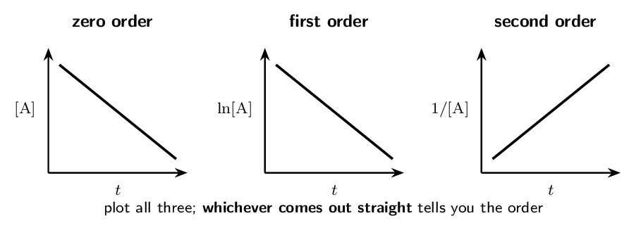
On the exam you are far more likely to be given data and asked which order it is than to be told the order outright. The method is always the same: make the three plots (or inspect three columns of numbers) and find the one that is linear. A straight \(\ln[\ce{A}]\)-versus-\(t\) plot is the evidence for first order, and saying so is what earns the mark — not asserting the order and moving on.
- Which plot is linear for a second-order reaction?
\(1/[\ce{A}]\) vs \(t\)
- A plot of \(\ln[\ce{A}]\) against \(t\) is a straight line with
slope \(-0.0400\,\mathrm{/s}\). Give the order and \(k\).
first order, \(k = 0.0400\,\mathrm{/s}\)
- For a first-order reaction with \(k = 0.100\,\mathrm{/s}\)
and \([\ce{A}]_{0} = 1.00\,\mathrm{M}\), find \([\ce{A}]\) after
10.0 s.
- You are given concentration-versus-time data and no order.
Describe how you would find the order. plot all three, find the straight one
(a) \(1/[\ce{A}]\) vs \(t\) (b) first order, \(k = 0.0400\,\mathrm{/s}\) (c) 0.368 M (d) plot all three, find the straight one
Ladder 6 • Half-life
ZUM §12.4The half-life \(t_{1/2}\) is the time for half the reactant to be consumed. Its behaviour differs sharply between orders, and that difference is itself a way to identify the order.
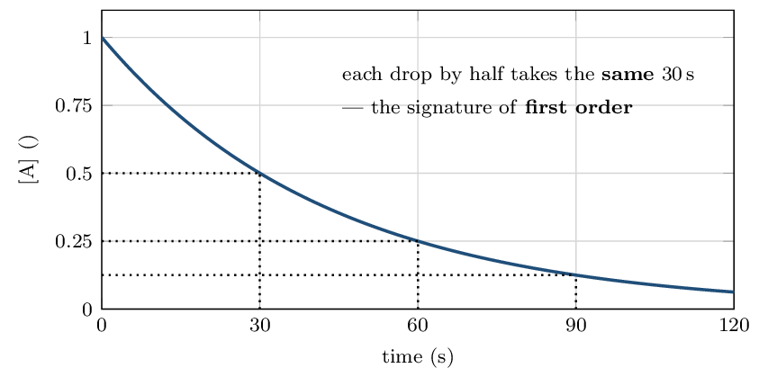
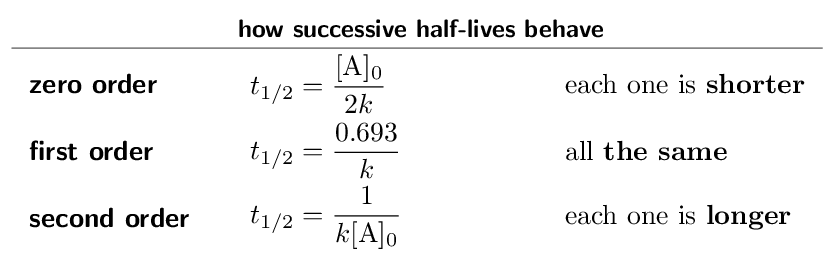
- A first-order reaction has \(k = 0.0350\,\mathrm{/s}\). Find
\(t_{1/2}\).
- What fraction remains after 3 half-lives?
- A first-order reaction is 75% complete. How many half-lives
have passed?
- Successive half-lives of a reaction get longer each time. What
order is it? second order
(a) 19.8 s (b) \(1/8\) (c) 2 (d) second order
Ladder 7 • Elementary steps and molecularity
ZUM §12.5An elementary step is a single collision event — what actually happens, not a summary. For an elementary step, and only for an elementary step, the coefficients are the orders.
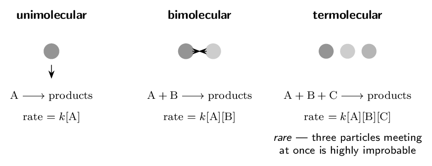
- Give the rate law for the elementary step
\(\ce{2NO2 -> N2O4}\). rate \(= k[\ce{NO2}]^{2}\)
- Give the molecularity of the elementary step
\(\ce{O3 -> O2 + O}\). unimolecular
- Give the rate law for the elementary step
\(\ce{NO + O3 -> NO2 + O2}\). rate \(= k[\ce{NO}][\ce{O3}]\)
- Why are termolecular steps rare? three-body collisions are improbable
(a) rate \(= k[\ce{NO2}]^{2}\) (b) unimolecular (c) rate \(= k[\ce{NO}][\ce{O3}]\) (d) three-body collisions are improbable
Ladder 8 • Mechanisms and the rate-determining step
ZUM §12.5A mechanism is the list of elementary steps. The slowest step sets the pace for the whole reaction, exactly as the narrowest point on a road sets the traffic speed.
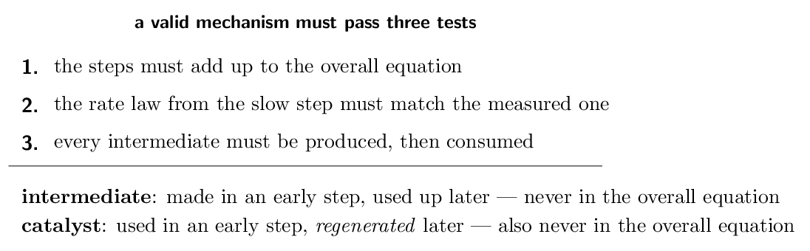
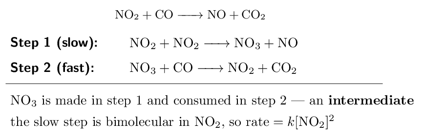
| Step 1 (slow): | \(\ce{NO2 + F2 -> NO2F + F}\) |
|---|---|
| Step 2 (fast): | \(\ce{NO2 + F -> NO2F}\) |
- Show the steps add to the overall equation.
they sum correctly
- Identify the intermediate. \(\ce{F}\) atoms
- Write the predicted rate law. rate \(= k[\ce{NO2}][\ce{F2}]\)
- Would doubling \([\ce{NO2}]\) double the rate? Explain.
yes — first order in \(\ce{NO2}\)
(a) they sum correctly (b) \(\ce{F}\) atoms (c) rate \(= k[\ce{NO2}][\ce{F2}]\) (d) yes — first order in \(\ce{NO2}\)
Ladder 9 • A fast first step: pre-equilibrium
ZUM §12.5When the first step is fast and reversible, the rate-determining step contains an intermediate — and a rate law may not contain an intermediate, because you cannot measure its concentration. This ladder is how you get rid of it.
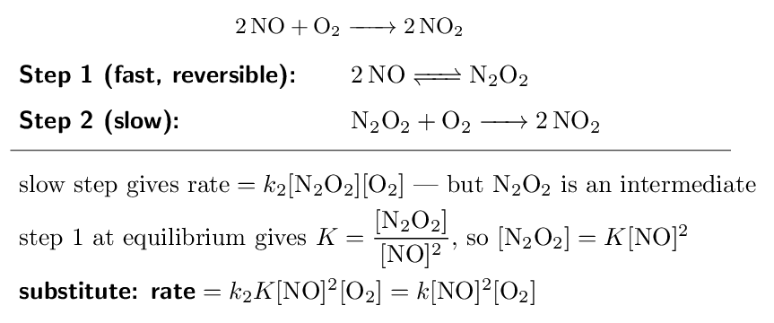
- Why may a rate law not contain an intermediate?
its concentration cannot be measured or controlled
- In the mechanism above, which species is the intermediate?
\(\ce{N2O2}\)
- A mechanism has fast \(\ce{A <=> B}\) then slow
\(\ce{B + C -> D}\). Write the rate law in terms of \(\ce{A}\) and
\(\ce{C}\). rate \(= k[\ce{A}][\ce{C}]\)
- Why is a termolecular one-step route for
\(\ce{2NO + O2 -> 2NO2}\) considered implausible?
it needs a three-body collision
(a) its concentration cannot be measured or controlled (b) \(\ce{N2O2}\) (c) rate \(= k[\ce{A}][\ce{C}]\) (d) it needs a three-body collision
Ladder 10 • The collision model
ZUM §12.6For a reaction to occur, particles must collide — with enough energy and in the right orientation. Almost every collision fails one test or the other, which is why reactions are so much slower than collision frequencies alone would suggest.
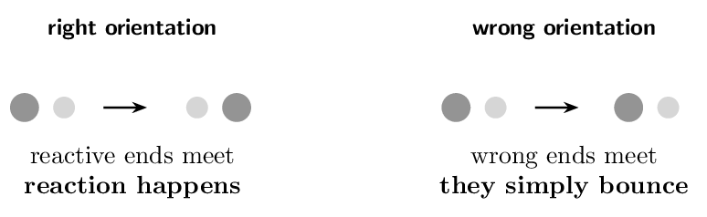
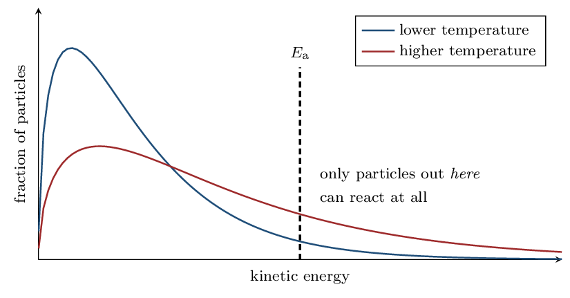
Heating does not shift the whole distribution up — it flattens and stretches it to the right. The peak barely moves, but the tail beyond \(E_{\mathrm{a}}\) grows enormously, and it is only the tail that reacts. For a typical activation energy near 50 kJ/mol, warming from 25 °C to 35 °C roughly doubles the rate — a 10 °C change producing a 100% change in speed. Say “the fraction of collisions with energy \(\ge E_{\mathrm{a}}\) increases”, not “the particles have more energy”: the second earns nothing.
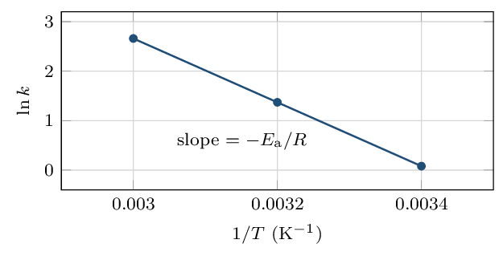
Use the two-point form: \[ \ln\!\left(\frac{k_{2}}{k_{1}}\right) = -\frac{E_{\mathrm{a}}}{R} \left(\frac{1}{T_{2}} - \frac{1}{T_{1}}\right) \] \[ \ln 2 = -\frac{E_{\mathrm{a}}}{8.314} \left(\frac{1}{310} - \frac{1}{300}\right) = -\frac{E_{\mathrm{a}}}{8.314}\left(-1.075e-4\right) \] \[ 0.693 = E_{\mathrm{a}} \times 1.293e-5 \quad\Longrightarrow\quad E_{\mathrm{a}} = 53600\,\mathrm{J/mol} = \mathbf{53.6\,\mathrm{kJ/mol}} \]
Two habits. Temperature must be in kelvin — the equation is meaningless in celsius. And \(R = 8.314\,\mathrm{}\) gives \(E_{\mathrm{a}}\) in joules, so divide by 1000 at the end; forgetting to is the single most common slip here.- State the two requirements for a collision to lead to reaction.
enough energy, correct orientation
- Why does raising the temperature increase the rate so sharply?
the fraction exceeding \(E_{\mathrm{a}}\) rises steeply
- What does the slope of a plot of \(\ln k\) against \(1/T\) equal?
\(-E_{\mathrm{a}}/R\)
- Does raising the temperature change \(E_{\mathrm{a}}\)? Explain.
no — it changes how many particles clear it
(a) enough energy, correct orientation (b) the fraction exceeding \(E_{\mathrm{a}}\) rises steeply (c) \(-E_{\mathrm{a}}/R\) (d) no — it changes how many particles clear it
Ladder 11 • Reaction energy profiles
ZUM §12.6An energy profile is the reaction drawn as a landscape: reactants on one side, products on the other, and a hill in between whose height is the activation energy.
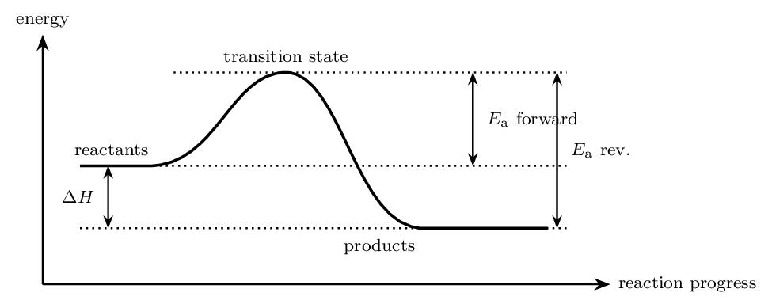
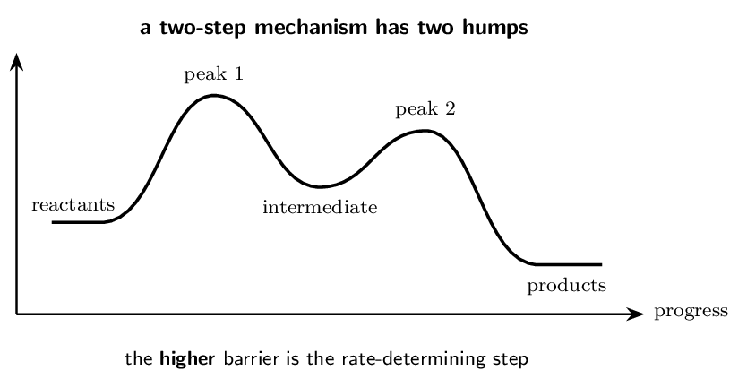
- \(E_{\mathrm{a}}\) of step 1 \(= 75 - 0 = 75\,\mathrm{}\)
- \(E_{\mathrm{a}}\) of step 2 \(= 50 - 20 = 30\,\mathrm{}\)
- overall \(\Delta H = -25 - 0 = -25\,\mathrm{kJ/mol}\)
- Find \(E_{\mathrm{a}}\) for step 1.
- Find \(E_{\mathrm{a}}\) for step 2.
- Which step is rate-determining? step 1
- Give the overall \(\Delta H\), and say whether the reaction is
exothermic or endothermic. -20 kJ/mol, exothermic
(a) 60 kJ/mol (b) 30 kJ/mol (c) step 1 (d) -20 kJ/mol, exothermic
Ladder 12 • Catalysis
ZUM §12.7A catalyst speeds a reaction by offering a different pathway with a lower activation energy. It changes the route, not the destination.
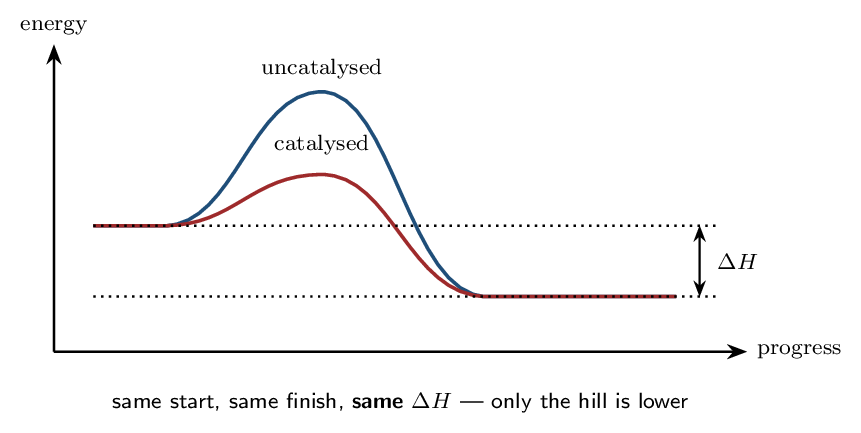
- How does a catalyst increase the rate? it lowers \(E_{\mathrm{a}}\) via a new pathway
- Does a catalyst change \(\Delta H\)? Explain.
no
- Distinguish an intermediate from a catalyst.
intermediate is made then used; catalyst is used then remade
- Does a catalyst shift the position of equilibrium? Explain.
no — both directions speed up equally
(a) it lowers \(E_{\mathrm{a}}\) via a new pathway (b) no (c) intermediate is made then used; catalyst is used then remade (d) no — both directions speed up equally
Mastery tracker
Tick a row only if all four YOUR TURN questions were right on the first attempt. Every row is assessed — Chapter 12 has no off-syllabus sections.
| First try? | Skill | Ladder | If not, re-read… |
|---|---|---|---|
| \(\square\) | rate and stoichiometry | 1 | divide by the coefficient |
| \(\square\) | rate laws and order | 2 | orders are experimental |
| \(\square\) | method of initial rates | 3 | change one thing at a time |
| \(\square\) | units of \(k\) | 4 | \(\mathrm{M^{\,1-n}\,s^{-1}}\) |
| \(\square\) | integrated rate laws | 5 | which plot is straight? |
| \(\square\) | half-life | 6 | only first order is constant |
| \(\square\) | elementary steps | 7 | coefficients work only here |
| \(\square\) | mechanisms and the RDS | 8 | the slow step sets the rate |
| \(\square\) | pre-equilibrium | 9 | eliminate the intermediate |
| \(\square\) | the collision model | 10 | energy and orientation |
| \(\square\) | energy profiles | 11 | measure from its own valley |
| \(\square\) | catalysis | 12 | new pathway, same \(\Delta H\) |
12/12: you have Unit 5. This chapter is unusually self-contained — almost nothing in it depends on the rest of the course — so a clean sweep here is genuinely banked.
9–11: look at where the misses fall. Ladders 1–6 are the computational half and repair with practice. Ladders 7–9 are the mechanism half, and a miss there is nearly always the same root cause: still reading orders off coefficients. Re-read Ladder 7 before attempting more problems.
8 or fewer: go back to Ladder 2 and hold one sentence in mind — orders come from experiment, not from the balanced equation. Most wrong answers in this unit are that error wearing a different hat. Ladder 3 (initial rates) and Ladder 8 (mechanisms) are the two that appear most often on the exam; if time is short, make those two automatic first.